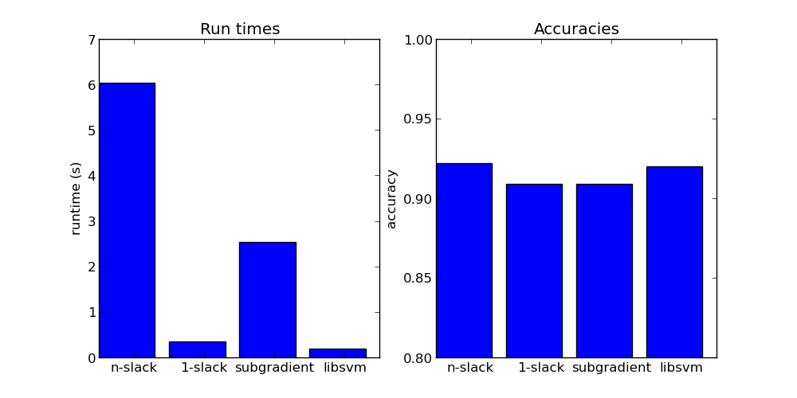

Example of training binary SVM using n-slack QP, 1-slack QP, SGD and SMO (libsvm). Our 1-slack QP does surprisingly well.
There are many parameters to tune and we can make 1-slack as good as the rest for the price of higher runtime, we can also try to make the others faster. We don’t really have a chance to beat LibSVM but that’s ok ;)
Script output:
Training n-slack dual structural SVM
no additional constraints
Score with pystruct n-slack ssvm: 0.922222 (took 6.177866 seconds)
Training 1-slack dual structural SVM
new constraint too weak.
no additional constraints
Score with pystruct 1-slack ssvm: 0.908889 (took 0.275046 seconds)
Training primal subgradient structural SVM
final objective: 2421.468743
Score with pystruct subgradient ssvm: 0.908889 (took 2.349554 seconds)
Score with sklearn and libsvm: 0.920000 (took 0.189229 seconds)
Python source code: plot_binary_svm.py
print __doc__
from time import time
import numpy as np
import matplotlib.pyplot as plt
from sklearn.datasets import load_digits
from sklearn.cross_validation import train_test_split
from sklearn.svm import SVC
from pystruct.models import BinarySVMModel
from pystruct.learners import (NSlackSSVM, OneSlackSSVM,
SubgradientSSVM)
# do a binary digit classification
digits = load_digits()
X, y = digits.data, digits.target
# make binary task by doing odd vs even numers
y = y % 2
# code as +1 and -1
y = 2 * y - 1
X /= X.max()
X_train, X_test, y_train, y_test = train_test_split(X, y, random_state=0)
pbl = BinarySVMModel(n_features=X_train.shape[1] + 1) # add one for bias
n_slack_svm = NSlackSSVM(pbl, verbose=0, check_constraints=False, C=10,
batch_size=-1)
one_slack_svm = OneSlackSSVM(pbl, verbose=0, check_constraints=False, C=10,
max_iter=1000, tol=0.1)
subgradient_svm = SubgradientSSVM(pbl, C=10, learning_rate=0.1, max_iter=100,
decay_exponent=0, batch_size=10, verbose=0)
# we add a constant 1 feature for the bias
X_train_bias = np.hstack([X_train, np.ones((X_train.shape[0], 1))])
X_test_bias = np.hstack([X_test, np.ones((X_test.shape[0], 1))])
# n-slack cutting plane ssvm
start = time()
n_slack_svm.fit(X_train_bias, y_train)
time_n_slack_svm = time() - start
acc_n_slack = n_slack_svm.score(X_test_bias, y_test)
print("Score with pystruct n-slack ssvm: %f (took %f seconds)"
% (acc_n_slack, time_n_slack_svm))
## 1-slack cutting plane ssvm
start = time()
one_slack_svm.fit(X_train_bias, y_train)
time_one_slack_svm = time() - start
acc_one_slack = one_slack_svm.score(X_test_bias, y_test)
print("Score with pystruct 1-slack ssvm: %f (took %f seconds)"
% (acc_one_slack, time_one_slack_svm))
# online subgradient ssvm
start = time()
subgradient_svm.fit(X_train_bias, y_train)
time_subgradient_svm = time() - start
acc_subgradient = subgradient_svm.score(X_test_bias, y_test)
print("Score with pystruct subgradient ssvm: %f (took %f seconds)"
% (acc_subgradient, time_subgradient_svm))
libsvm = SVC(kernel='linear', C=10)
start = time()
libsvm.fit(X_train, y_train)
time_libsvm = time() - start
acc_libsvm = libsvm.score(X_test, y_test)
print("Score with sklearn and libsvm: %f (took %f seconds)"
% (acc_libsvm, time_libsvm))
# plot the results
fig, ax = plt.subplots(1, 2, figsize=(10, 5))
ax[0].bar(range(4), [time_n_slack_svm, time_one_slack_svm,
time_subgradient_svm, time_libsvm])
ax[0].set_xticks(np.arange(4) + .5)
ax[0].set_xticklabels(["n-slack", "1-slack", "subgradient", "libsvm"])
ax[0].set_ylabel("runtime (s)")
ax[0].set_title("Run times")
ax[1].set_title("Accuracies")
ax[1].bar(range(4), [acc_n_slack, acc_one_slack,
acc_subgradient, acc_libsvm])
ax[1].set_xticks(np.arange(4) + .5)
ax[1].set_xticklabels(["n-slack", "1-slack", "subgradient", "libsvm"])
ax[1].set_ylim((.8, 1))
ax[1].set_ylabel("accuracy")
plt.show()
Total running time of the example: 9.33 seconds